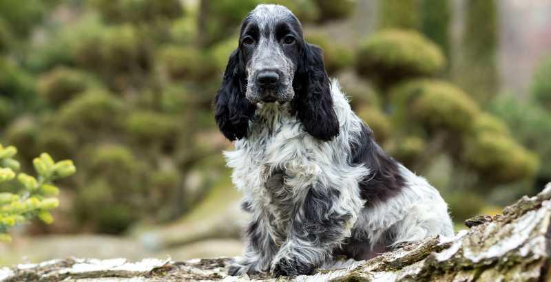

Le Cocker anglais

Définition
Le Cocker Spaniel Anglais est une race véritablement populaire. Son caractère plaît à de nombreuses familles. Il est intelligent, docile, doux, agréable à vivre et cherche en permanence à satisfaire son maître. Le Cocker Anglais est l'une des plus anciennes races de spaniels britanniques. Elle a été reconnue en tant que race à part entière en 1873, année de la création du Kennel Club. Son origine est assez floue même s’il est acquis depuis toujours que ce chien provient d’Angleterre. Chasseur-né, le Cocker Anglais s'était particulièrement illustré comme leveur de bécasses. Son nom "Cocker" vient d'ailleurs du mot anglais "woodcock" qui veut dire bécasse. Paul Gaillard l’introduit en France à la fin du 19e siècle. Le standard de la race a été fixé en 1901. Le Cocker Anglais est un véritable concentré de gaieté, de vitalité et d'intelligence. Ce n’est pas un solitaire il est parfois un peu « pot de colle », il faut donc l’habituer dès qu’il est chiot à rester seul. Sa queue frétille en permanence, surtout lorsqu'il est en action et, durant la chasse, quand il suit une piste. À la maison, il fait valoir son naturel très joueur auprès des enfants, tout en se montrant affectueux. Tant qu'il peut se dépenser, il est un très bon chien de compagnie. Il n'est jamais plus heureux que lorsqu'il s'adonne à la vie en plein air et qu'il se dépense. Le Cocker Anglais étant un chien très intelligent, son éducation ne pose pas de problème particulier en ce qui concerne l'assimilation. La seule difficulté consiste à savoir canaliser son enthousiasme et son exubérance. Le Cocker Spaniel Anglais peut vivre jusqu’à une quinzaine d’années dans une excellente santé. Il est robuste et ne craint guère les maladies. Néanmoins, il peut être sujet à l’obésité s’il ne pratique pas assez d’exercice ! Il faut ainsi le faire courir quotidiennement. Ses longues oreilles favorisent également les corps étrangers.
Caractéristiques
Son poil peut être mi-long à long, sans être abondant, plat et jamais ondulé, ni bouclé. La texture de la robe est soyeuse, avec des franges garnissant les pattes et les postérieurs au-dessus des jarrets.
Sa couleur peut être unie: noire, rouge, fauve, chocolat, noire et feu, marron et feu, mais jamais blanche; bicolore: blanc associé au noir, orange, marron ou citron; tricolore: noir, blanc et feu ou marron, blanc et feu ou rouannée: bleu, orange, citron, marron.
Sa tête est souvent allongée et ronde. Le crâne est bien développé et nettement ciselé.
Ses oreilles sont en forme de lobe, attachées bas, avec des franges de poils longs, plats et soyeux.
Ses yeux sont couramment bruns ou brun foncés, occupant la majeure partie de l'espace des orbites, mais ne sont pas saillants. Ils expriment son intelligence, sa vivacité et sa douceur.
Son corps est fort et compact, la ligne du dessus est ferme et droite, le rein est court et large, la poitrine est bien développée et les côtes sont bien cintrées.
Sa queue est attachée légèrement plus bas que la ligne du dos, portée horizontalement (jamais relevée) et frétillante en action.